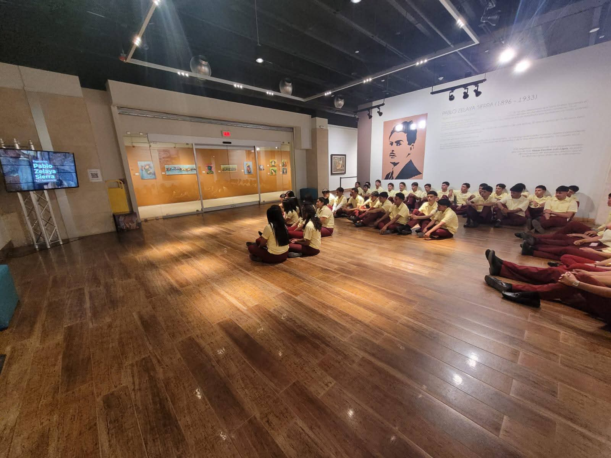
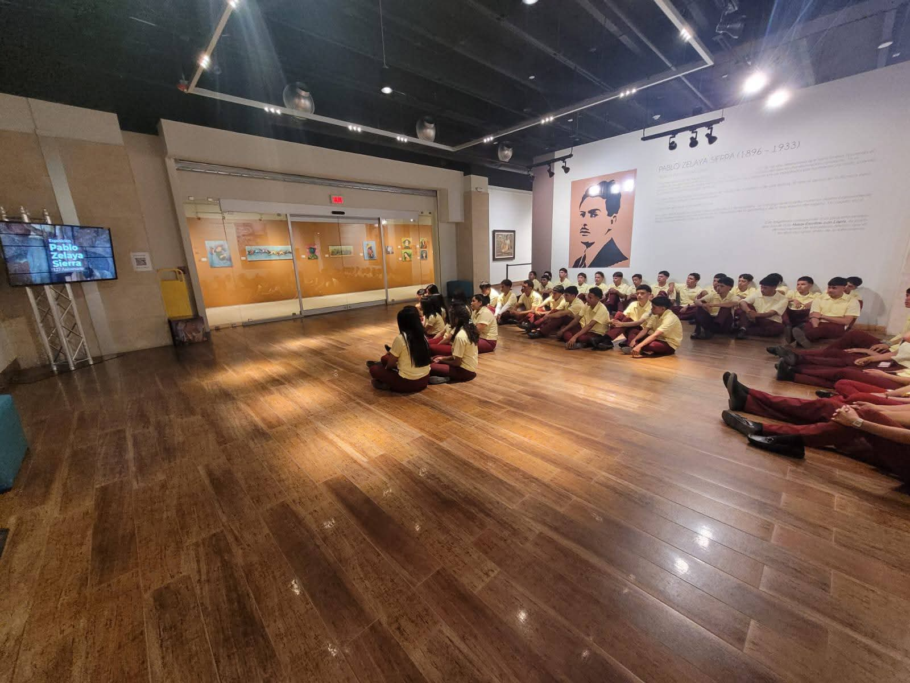
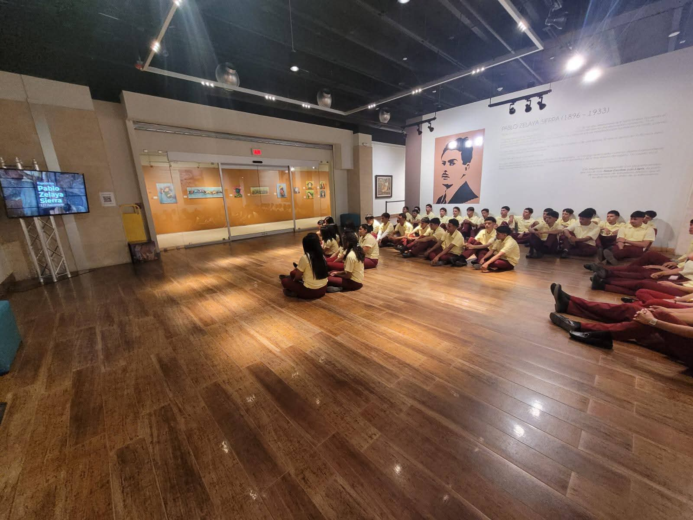

Liderando la excelencia en educación técnica y formación profesional

Talleres especializados en estructuras metálicas, electricidad, belleza y madera.
Cursos fundamentales en matemáticas, física y química como base sólida técnica.
Formación integral y práctica especializada para el éxito en el mercado laboral.
El Instituto Técnico Francisco Miranda es un referente en educación técnica...
Fundado en 1988, el instituto nació con la visión de ofrecer educación técnica de calidad...
Equipo docente altamente calificado con experiencia, maestrías y doctorados...